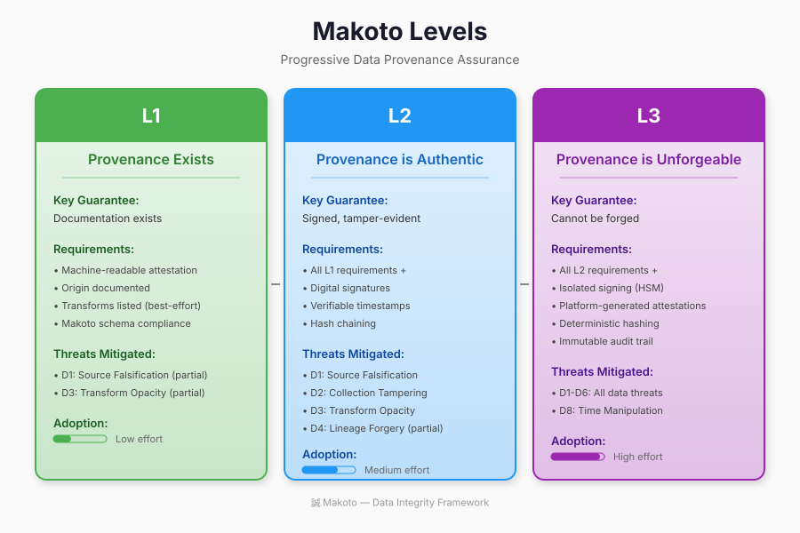

Understanding Makoto Levels
Makoto defines three progressive security levels for data supply chains. Each level builds on the previous, providing stronger guarantees about data provenance and integrity. This page explains what each level means, what's required to achieve it, and how to choose the right level for your use case.
Key Principle: Start at Level 1 and progress as your security requirements mature. Each level is valuable on its own—you don't need L3 to benefit from provenance tracking.
Levels at a Glance

Provenance Exists
Documentation that data origin and processing are recorded in machine-readable format.
Effort: Low | Trust: Self-attested
Provenance is Authentic
Attestations are cryptographically signed with verifiable identity binding.
Effort: Medium | Trust: Signed
Provenance is Unforgeable
Attestations generated by isolated infrastructure that processing code cannot influence.
Effort: High | Trust: Hardware-backed
L1 Provenance Exists
"The data pipeline produces attestations that document data origin and processing."
Level 1 establishes the foundation: machine-readable documentation of where data came from and what happened to it. At this level, attestations may be self-reported by the data producer—the goal is simply to have provenance information exist in a structured format.
Requirements
| Requirement | Description | Verification |
|---|---|---|
| Attestation Exists | Machine-readable attestation accompanies the data artifact | Check attestation file exists and parses correctly |
| Origin Documented | Source of data is recorded (API, database, file, etc.) | Verify origin.source field is populated |
| Transforms Documented | Processing steps are listed (best-effort completeness) | Check transform attestations exist for each stage |
| Format Compliance | Uses Makoto attestation schema with valid predicate type | Validate against JSON schema |
Threats Mitigated
- D1: Source Falsification (partial) — Origin claims are documented, though not cryptographically verified
- D3: Transform Opacity (partial) — Processing steps are visible, enabling audit trails
Use Cases
- Internal data governance and cataloging
- Compliance documentation for auditors
- Basic lineage tracking for debugging
- Getting started with data provenance
Implementation Example
{
"_type": "https://in-toto.io/Statement/v1",
"subject": [{
"name": "dataset:sales_2025q1",
"digest": { "sha256": "abc123..." }
}],
"predicateType": "https://makoto.dev/origin/v1",
"predicate": {
"origin": {
"source": "https://crm.example.com/api/sales",
"collectionTimestamp": "2025-01-15T10:00:00Z"
},
"collector": {
"id": "data-team/etl-pipeline-v2"
}
}
}
L2 Provenance is Authentic
"Attestations are cryptographically signed by the data processor and cannot be tampered with after creation."
Level 2 adds cryptographic guarantees. Attestations are digitally signed, allowing consumers to verify they haven't been modified and came from a known identity. This prevents attestation forgery and provides non-repudiation.
Requirements
| Requirement | Description | Verification |
|---|---|---|
| All L1 Requirements | Plus additional controls below | — |
| Signed Attestations | Digital signatures using ECDSA P-256, Ed25519, or equivalent | Verify DSSE envelope signature |
| Identity Binding | Signing identity is verifiable (X.509 cert, Sigstore, etc.) | Validate certificate chain or OIDC identity |
| Tamper-Evident | Consumers can detect if attestation was modified | Signature verification fails if content changed |
| Timestamp Binding | Attestations include verifiable timestamps (RFC 3161 or similar) | Verify timestamp authority signature |
| Hash Chaining | Transform attestations reference cryptographic hash of inputs | Verify input hashes match previous outputs |
Threats Mitigated
- D1: Source Falsification — Signed origin claims tied to verifiable identity
- D2: Collection Tampering — Signed attestations detect post-collection modification
- D3: Transform Opacity — Signed transform records with input/output hashes
- D4: Lineage Forgery (partial) — Hash chaining prevents insertion of fake history
- D8: Time Manipulation — Trusted timestamps prevent backdating
Use Cases
- Data sharing with external partners
- Regulatory compliance requiring audit trails (GDPR, CCPA)
- AI/ML training data provenance for model governance
- Data marketplace trust and verification
Implementation Options
Sigstore (Recommended)
Keyless signing with OIDC identity. No key management required.
cosign sign-blob --bundle attestation.json
X.509 Certificates
Traditional PKI with certificate chain. Requires key management.
openssl dgst -sign key.pem attestation.json
Formal Requirements: For the complete list of MUST/SHOULD requirements for producers, platforms, and verifiers, see the L2 Formal Requirements specification.
L3 Provenance is Unforgeable
"Attestations are generated by isolated infrastructure that data processing logic cannot influence."
Level 3 provides the strongest guarantees by removing the data processor from the trust boundary. Attestations are generated by the platform itself—using hardware security modules (HSM), trusted execution environments (TEE), or isolated signing infrastructure—ensuring that even a compromised processing pipeline cannot forge provenance claims.
Requirements
| Requirement | Description | Verification |
|---|---|---|
| All L2 Requirements | Plus additional controls below | — |
| Isolated Signing | Signing keys stored in HSM/TEE, inaccessible to user code | Platform attestation of key isolation |
| Platform-Generated | Attestations created by trusted control plane, not tenant code | Verify attestation origin is platform, not user |
| Deterministic Hashing | Data hashes computed by platform infrastructure | Hash computation in isolated environment |
| Immutable Audit Trail | All attestation operations logged to append-only store | Verify audit log integrity and completeness |
| Non-Repudiation | Producer cannot deny generating attested data | Cryptographic proof of origin |
Threats Mitigated
- D1-D4: All provenance threats — Platform-generated attestations cannot be forged
- D5: Stream Injection — Platform validates all records entering the stream
- D6: Aggregation Manipulation — Aggregates computed in isolated environment
- D8: Time Manipulation — Platform controls timestamp generation
Use Cases
- Financial services with regulatory requirements (SOX, MiFID II)
- Healthcare data with HIPAA compliance
- Government and defense data handling
- High-stakes AI training data for regulated models
Platform Requirements
Note: Level 3 requires platform support. The data processing infrastructure must provide isolated signing capabilities. Examples include cloud confidential computing (AWS Nitro, Azure Confidential Computing), dedicated HSM services, or platforms like Expanso that implement L3 natively.
Choosing and Progressing Through Levels
Decision Framework
| If you need... | Start with | Consider upgrading when... |
|---|---|---|
| Basic lineage tracking | L1 | You share data externally or face audits |
| Partner trust & compliance | L2 | You handle regulated data or high-value assets |
| Maximum security guarantees | L3 | — |
Migration Path: L1 → L2
- Establish key management — Set up signing keys (or use Sigstore for keyless)
- Add signing to pipeline — Wrap attestations in DSSE envelope with signature
- Implement hash chaining — Reference input hashes in transform attestations
- Add timestamp service — Integrate RFC 3161 or equivalent
- Publish verification keys — Make public keys available for consumers
Migration Path: L2 → L3
- Evaluate platform options — Choose HSM/TEE-capable infrastructure
- Migrate signing to platform — Move signing keys to isolated environment
- Enable platform attestation — Configure platform to generate attestations
- Verify isolation — Audit that user code cannot access signing keys
- Set up audit logging — Configure immutable attestation audit trail
Level Comparison Summary
| Aspect | L1 | L2 | L3 |
|---|---|---|---|
| Attestation signed? | No | Yes (by producer) | Yes (by platform) |
| Tamper detection | Hash comparison | Signature verification | Platform verification |
| Trust model | Trust producer | Trust producer identity | Trust platform only |
| Key compromise impact | N/A | Can forge attestations | Cannot forge (isolated) |
| Implementation effort | Hours to days | Days to weeks | Weeks to months |
Next Steps
View Examples
See complete attestation examples for origin, transform, and streaming use cases.
Browse examples →Understand Threats
Learn about data supply chain threats and how each level mitigates them.
View threat model →